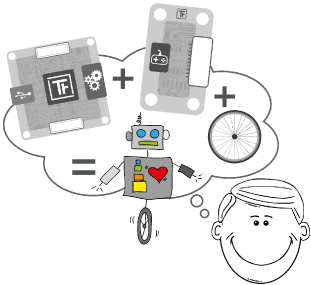
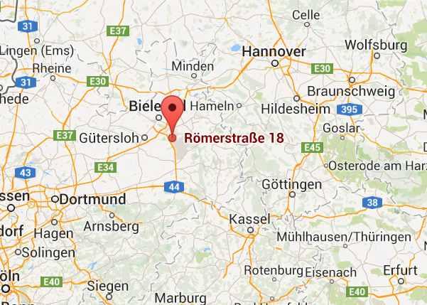
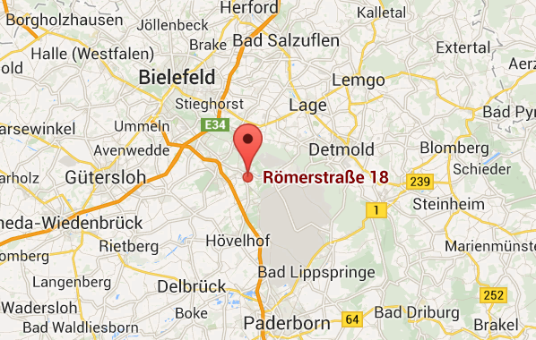
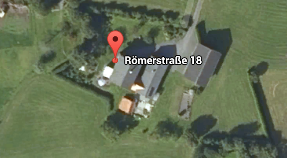
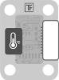
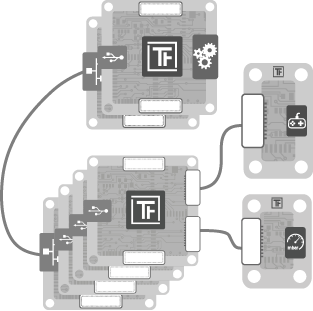
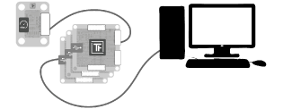

prepare..
.. for Industrial Prototyping - TinkerForge
Start 14:30
Sven Ruppert
has been coding java since 1996
Principal IT Consultant

Germany - Munich
@SvenRuppert
Sven Ruppert
speaking java since 1996
Projects in the field of:
- Automobileindustry
- Energy
- Finance / Leasing
- Space- Satellit-
- Governmnet / UN / Worldbank
Wo?
- Europe
- Asia - Indien up to Malaysia
Java 8 - TinkerForge
Overview
goals for today
- What is TinkerForge ?
- basic elements
- BrickViewer / BrickDaemon
- Hello World
- MQTT example
- testing / mocking
- conclusion
What is TinkerForge

a company from Stukenbrock.. hhmm
What is TinkerForge - it is in Germany
What is TinkerForge - near Bielefeld

What is TinkerForge - between Brackel and Borgholzhausen

What is TinkerForge - ok, it is green...

Basic elements - Bricks
Bricks can be controlled via USB. Each Brick has one task, for example to control DC-, stepper- or servo motors. With Master Bricks it is possible to build a stack of Bricks. Each stack only requires one USB connection. The RED Brick can be used to execute your program directly and realize stand-alone applications without the need for external controlling devices.
Basic elements - Bricklets

Bricklets extend the features of Bricks, they are connected to Bricks with a Bricklet cable. There are various sensor Bricklets that can measure physical quantities such as temperature, humidity, distance and so on. Another group of Bricklets can control LCDs or more generally read and control analog and digital in- and outputs.
Basic elements - Master Extensions
Master Extensions extend the interfaces of single Master Bricks or whole Stacks of Bricks. It is possible to connect stacks among themselves and to control them wirelessly over Ethernet or Wi-Fi.
Basic elements - how to connect

Basic elements - supported platforms
BrickViewer / BrickDaemon
Basic elements - supported programming languages
C/C++, C#, Delphi/Lazarus, Java, JavaScript, LabVIEW, Mathematica, MATLAB/Octave, Perl, PHP, Python, Ruby, Shell, Visual Basic .NET are currently supported.
Is the desired programming language not available, it is possible to control the modules directly over TCP/IP.
Basic elements - Module-Identification
The modules are addressed with a unique ID and not based on the electrical wiring. This allows to change the structure of the system at any time, without the need to change any of the source code.
Master UID / Brick UID Combinations
Basic elements - Connect via (1/3)
WiFi, Wifi Extensions needed.
Basic elements - Connect via (2/3)

USB, ca 1000 Unts/sec.
Basic elements - Connect via (3/3)
Standalone -> RedBrick finally available
Basic elements - Connect via (3/3)
Standalone -> RedBrick finally available (I have a few here ;-) )
Basic elements - OpenSource
The complete software as well as the hardware modules are open source. This makes it possible to use the Tinkerforge building blocks as a foundation for your own developments. The software is licensed under GPL v2+, and the hardware is licensed under CERN Open Hardware License. Whereas the API Bindings are public domain (i.e. they can be used in a proprietary project).
BrickViewer / BrickDaemon
sudo apt-get install libusb-1.0-0 libudev0 pm-utils
wget http://download.tinkerforge.com/
tools/brickd/linux/brickd_linux_latest_armhf.deb
sudo dpkg -i brickd_linux_latest_armhf.deb
BrickViewer / BrickDaemon
show it please..
Hello World - Temperature pre JDK8
IPConnection ipcon = new IPConnection();
ipcon.setAutoReconnect(true);
int timeoutMS = 2500;
ipcon.setTimeout(timeoutMS);
BrickletTemperature temp = new BrickletTemperature("uid", ipcon);
temp.addTemperatureListener(new BrickletTemperature.TemperatureListener() {
@Override
public void temperature(short temperature) {
int temp = temperature / 100;
System.out.println("temp = " + temp);
}
});
try {
ipcon.connect("localhost", 4229);
} catch (IOException | AlreadyConnectedException e) { e.printStackTrace();}
Hello World - Temperature JDK8
IPConnection ipcon = new IPConnection();
ipcon.setAutoReconnect(true);
int timeoutMS = 2500;
ipcon.setTimeout(timeoutMS);
BrickletTemperature temp = new BrickletTemperature("uid", ipcon);
temp.addTemperatureListener(temperature -> {
int temp1 = temperature / 100;
System.out.println("temp = " + temp1);
});
try {
ipcon.connect("localhost", 4229);
} catch (IOException | AlreadyConnectedException e) { e.printStackTrace(); }
How to build your own API
for every language TinkerForge is using a generator
https://github.com/Tinkerforge/generators
How to build your own API
for every language TinkerForge is using a generator
https://github.com/Tinkerforge/generators
the API is very language generic
How to build your own API
for every language TinkerForge is using a generator
https://github.com/Tinkerforge/generators
the API is very language generic
this means.. no special language level features are used
How to build your own API
for every language TinkerForge is using a generator
https://github.com/Tinkerforge/generators
the API is very language generic
this means.. no special language level features are used
a few demos you can look at https://github.com/RapidPM/iot-tinkerforge
maven
<dependency>
<groupId>com.tinkerforge</groupId>
<artifactId>tinkerforge</artifactId>
<version>2.1.4</version>
<scope>compile</scope>
</dependency>
IoT Persistence
Persistence is mostly ... slooooow
IoT Persistence
Persistence is mostly ... slooooow
a funny thing that could happen...
IoT Persistence
Persistence is mostly ... slooooow
a funny thing that could happen...
if the ActionListener is working longer as the new value need to come...
IoT Persistence
Persistence is mostly ... slooooow
a funny thing that could happen...
if the ActionListener is working longer as the new value need to come...
... some Bricklets are not working anymore...
IoT Persistence
Persistence is mostly ... slooooow
a funny thing that could happen...
if the ActionListener is working longer as the new value need to come...
... some Bricklets are not working anymore...
you could use framworks like... for ex. MappDB
IoT Persistence
Persistence is mostly ... slooooow
a funny thing that could happen...
if the ActionListener is working longer as the new value need to come...
... some Bricklets are not working anymore...
you could use framworks like... for ex. MappDB
but how to deal with slow ressources like MQTT ?
MQTT
Broker
central service for the communiction
MQTT installation on a Raspi
wget http://repo.mosquitto.org/debian/mosquitto-repo.gpg.key
sudo apt-key add mosquitto-repo.gpg.key
cd /etc/apt/sources.list.d/
sudo wget http://repo.mosquitto.org/debian/mosquitto-repo.list
sudo apt-get update
sudo apt-get install mosquitto
MQTT
<!--MQTT-->
<dependency>
<groupId>org.eclipse.paho</groupId>
<artifactId>mqtt-client</artifactId>
<type>jar</type>
<version>0.4.0</version>
</dependency>
MQTT - MqttClientBuilder
/...
public MqttClient build(){
MqttClient client;
try {
if(memoryPersistence){
client = new MqttClient( uri,clientUID, new MemoryPersistence() );
} else{
client = new MqttClient( uri,clientUID, new MqttDefaultFilePersistence());
}
} catch (MqttException e) {
e.printStackTrace();
client = null;
}
return client;
}
MQTT - MqttClientBuilder
public MqttClientBuilder clientUIDGenerated() {
String substring = UUID.randomUUID()
.toString().replace("-", "").substring(0, 22);
this.clientUID = substring;
System.out.println("clientUID = " + clientUID);
return this;
}
MQTT - MqttClientBuilder
public MqttClientBuilder clientUIDGenerated() {
String substring = UUID.randomUUID()
.toString().replace("-", "").substring(0, 22);
this.clientUID = substring;
System.out.println("clientUID = " + clientUID);
return this;
}
this UID must be unique...
MQTT - MqttClientBuilder
public MqttClientBuilder clientUIDGenerated() {
String substring = UUID.randomUUID()
.toString().replace("-", "").substring(0, 22);
this.clientUID = substring;
System.out.println("clientUID = " + clientUID);
return this;
}
this UID must be unique...
otherwise the last will win...
MQTT - how to use the MqttClientBuilder
public static final String TOPIC = "TinkerForge/Wetterstation/";
public static final String BROKER = "192.168.0.106"; //broker IP
private static MqttClientBuilder builder = new MqttClientBuilder();
//.....
MqttClient sender = builder
.uri("tcp://" + BROKER+":1883")
.clientUIDGenerated()
.build();
sender.connect();
MqttBuffer buffer = new MqttBuffer().client(sender).topic(TOPIC).qos(1);
MQTT - how to use the MqttClientBuilder
public static final String TOPIC = "TinkerForge/Wetterstation/";
public static final String BROKER = "192.168.0.106"; //broker IP
private static MqttClientBuilder builder = new MqttClientBuilder();
//.....
MqttClient sender = builder
.uri("tcp://" + BROKER+":1883")
.clientUIDGenerated()
.build();
sender.connect();
MqttBuffer buffer = new MqttBuffer().client(sender).topic(TOPIC).qos(1);
all this is not time critical..
MQTT - how to use the MqttClientBuilder
IPConnection ipcon = new IPConnection();
ipcon.setAutoReconnect(true);
int timeoutMS = 2500;
ipcon.setTimeout(timeoutMS);
BrickletTemperature temp = new BrickletTemperature("uid", ipcon);
temp.addTemperatureListener(temperature -> {
int temp1 = temperature / 100;
buffer.sendAsync(temp1+"");
});
try {
ipcon.connect("localhost", 4229);
} catch (IOException | AlreadyConnectedException e) { e.printStackTrace(); }
MQTT - MqttBuffer
static final ExecutorService fixedThreadPool = Executors.newFixedThreadPool(4);
public void sendAsync(String msg) {
Supplier<String> task = () -> {
try {
client.publish(topic, (msg).getBytes("UTF-8"),qos, retained);
} catch (MqttException | UnsupportedEncodingException e) { e.printStackTrace(); }
return "Done - " + msg;
};
CompletableFuture.supplyAsync(task, fixedThreadPool).thenAccept(System.out::println);
}
testing / mocking
How to debug the IoT Device?
testing / mocking
How to debug the IoT Device?
in the class IPConnection you can find a method callDeviceListener
testing / mocking
How to debug the IoT Device?
in the class IPConnection you can find a method callDeviceListener
every Bricklet will have a unique type-ID. z.B. Temperatur :
byte callbackIndex = BrickletTemperature.CALLBACK_TEMPERATURE
testing / mocking
How to debug the IoT Device?
in the class IPConnection you can find a method callDeviceListener
every Bricklet will have a unique type-ID. z.B. Temperatur :
byte callbackIndex = BrickletTemperature.CALLBACK_TEMPERATURE
now you could use reflection...
testing / mocking
How to debug the IoT Device?
in the class IPConnection you can find a method callDeviceListener
every Bricklet will have a unique type-ID. z.B. Temperatur :
byte callbackIndex = BrickletTemperature.CALLBACK_TEMPERATURE
now you could use reflection...
a Thread will call this method with values..
testing / mocking (1/3)
IPConnection ipConnection = new IPConnection();
BrickletTemperature brickletTemperature
= new BrickletTemperature("kjh6", ipConnection);
byte callbackIndex = BrickletTemperature.CALLBACK_TEMPERATURE;
Class<IPConnection> ipConnectionClass = IPConnection.class;
Method callDeviceListener = ipConnectionClass.getDeclaredMethod(
"callDeviceListener",
BrickletTemperature.class, byte.class, byte[].class);
callDeviceListener.setAccessible(true);
testing / mocking (2/3)
new Thread(() -> {
try {
Random random = new Random();
while (true) {
int randomDiff = random.nextInt(3) - 1;
callDeviceListener.invoke(ipConnection, brickletTemperature,
(byte) callbackIndex, new byte[]{0, 0, 0, 0, 0, 0, 0, 0,
(byte) (startValue + randomDiff), 0});
Thread.sleep(5000l);
}
} catch (IllegalAccessException
| InvocationTargetException
| InterruptedException e) {
e.printStackTrace();
}
}).start();
testing / mocking (3/3)
//not during testing/mocking
//ipConnection.connect("localhost", 4229);
brickletTemperature.addTemperatureListener(
temperature
-> System.out.println("temperature = " + temperature));
conclusion
no need for electrical work / putting things together like LEGO
conclusion
no need for electrical work / putting things together like LEGO
you can code in JAVA ;-)
conclusion
no need for electrical work / putting things together like LEGO
you can code in JAVA ;-)
API generator for all devices
conclusion
no need for electrical work / putting things together like LEGO
you can code in JAVA ;-)
API generator for all devices
easy to debug and to simulate with the orig API!!
conclusion
no need for electrical work / putting things together like LEGO
you can code in JAVA ;-)
API generator for all devices
easy to debug and to simulate with the orig API!!
complete OpenSource
conclusion
no need for electrical work / putting things together like LEGO
you can code in JAVA ;-)
API generator for all devices
easy to debug and to simulate with the orig API!!
complete OpenSource
TinkerForge will give you a wide range of sonsors and actors
conclusion
no need for electrical work / putting things together like LEGO
you can code in JAVA ;-)
API generator for all devices
easy to debug and to simulate with the orig API!!
complete OpenSource
TinkerForge will give you a wide range of sonsors and actors
cheap for prototyping
conclusion
no need for electrical work / putting things together like LEGO
you can code in JAVA ;-)
API generator for all devices
easy to debug and to simulate with the orig API!!
complete OpenSource
TinkerForge will give you a wide range of sonsors and actors
cheap for prototyping
easy modification / short time to market with prototypes
only one more thing...
a lot of stuff.. and now ?
only one more thing...
a lot of stuff.. and now ?
check the GitHub Repo : 20150626_IOT_Tinkerforge_JBCNConf
only one more thing...
a lot of stuff.. and now ?
check the GitHub Repo : 20150626_IOT_Tinkerforge_JBCNConf
and for more code : RapidPM / iot-tinkerforge
only one more thing...
a lot of stuff.. and now ?
check the GitHub Repo : 20150626_IOT_Tinkerforge_JBCNConf
and for more code : RapidPM / iot-tinkerforge
but the easiest way to get more infos : ???
only one more thing...
a lot of stuff.. and now ?
check the GitHub Repo : 20150626_IOT_Tinkerforge_JBCNConf
and for more code : RapidPM / iot-tinkerforge
but the easiest way to get more infos : follow me on Twitter
<Thank You!>